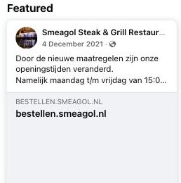
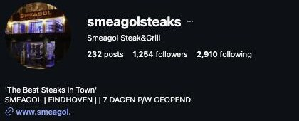

Steak'ler hazır.
Sosyal medya sustu.
De steaks staan klaar.
De socials zijn stil.
smeagol.nl'yi, iki Instagram hesabınızı, TikTok'u, Facebook'u ve Google profilinizi tek tek inceledik. Chef Kenan videoları TikTok'ta 174.700 izlenmeye kadar çıktı; sonra 24 Şubat 2026'dan beri düzenli paylaşım yok. Bu sayfada şu anki durum, ilk hafta yapılacak düzeltmeler, yeni görsel dil, örnek gönderiler, yayına hazır 7 reel ve Aralık takvimi var.
We hebben smeagol.nl, jullie twee Instagram-accounts, TikTok, Facebook en het Google-profiel stuk voor stuk bekeken. De video's met Chef Kenan haalden op TikTok tot 174.700 weergaven; sinds 24 februari 2026 wordt er niet meer regelmatig gepost. Op deze pagina: de huidige situatie, snelle verbeteringen voor week 1, een nieuwe beeldtaal, voorbeeldposts, zeven kant-en-klare reels en een planning voor december.
Beş kanal, beş ayrı Smeagol.
Vijf kanalen, vijf verschillende Smeagols.
Bir müşteri "Smeagol Eindhoven" aradığında iki Instagram hesabı, 2021'de kalmış bir Facebook sayfası ve sosyal medya linki olmayan yeni bir website görüyor. Rakamlar 24 Kasım 2026'da herkese açık profillerden alındı.
Wie "Smeagol Eindhoven" zoekt, vindt twee Instagram-accounts, een Facebookpagina die in 2021 is blijven staan en een nieuwe website zonder links naar social media. Cijfers op 24 november 2026 van de openbare profielen.
| Kanal | Kanaal | Takipçi | Volgers | Son paylaşım | Laatste post | Ne gördük | Wat we zagen | Durum | Status |
|---|---|---|---|---|---|---|---|---|---|
| Instagram@smeagol040 | 1.554 | 3 Eki 2026 (tek, açıklamasız) öncesi 24 Şub 20263 okt 2026 (los, zonder tekst) daarvoor 24 feb 2026 |
Son 36 gönderide ortalama 14 beğeni (3–82). Öne çıkanlarda yazım hataları: "Tappas", "Salade's", "Desert". Profil fotoğrafındaki logo sitedeki logodan farklı. Bio'da rezervasyon linki yok.Gemiddeld 14 likes over de laatste 36 posts (3–82). Spelfouten in de highlights: "Tappas", "Salade's", "Desert". Het logo in de profielfoto wijkt af van de website. Geen reserveerlink in de bio. | SessizStil | |||||
| Instagram (eski)Instagram (oud)@smeagolsteaks | 1.254 | 6 Kas 20236 nov 2023 | Hâlâ açık ve 2.910 hesabı takip ediyor. Bio linki yarım kalmış ("www.smeagol."). Yeni hesaba yönlendirme yok; takipçiler iki hesap arasında bölünmüş.Nog actief en volgt 2.910 accounts. De link in de bio is afgebroken ("www.smeagol."). Geen verwijzing naar het nieuwe account; de volgers zijn over twee accounts verdeeld. | Kafa karıştırıyorVerwarrend | |||||
| TikTok@smeagolsteak | 485 · 7.615 beğeni485 · 7.615 likes | 24 Şub 202624 feb 2026 | 18 video, 18 Aralık 2025 – 24 Şubat 2026. Üç video 47K–175K izlendi, ortanca 4,9K. Bio'da link yok, sadece "IG: @smeagol040".18 video's, 18 december 2025 – 24 februari 2026. Drie video's 47K–175K weergaven, mediaan 4,9K. Geen link in de bio, alleen "IG: @smeagol040". | En güçlü varlıkSterkste troef | |||||
| FacebookSmeagol Steak & Grill Restaurant | 2.800 · %90 tavsiye (418)2.800 · 90% aanbevolen (418) | Sabit gönderi 4 Ara 2021Vastgezet 4 dec 2021 | En üstte korona açılış saatleri ve çalışmayan bestellen.smeagol.nl linki. Altındaki son gönderi 2020. Sayfa açıklaması "uitsluitend biologisch" diyor; yeni sitede bu iddia yok.Bovenaan de openingstijden uit de coronatijd en een niet-werkende link naar bestellen.smeagol.nl. De post daaronder is uit 2020. De paginatekst zegt "uitsluitend biologisch"; dat staat niet op de nieuwe site. | EskimişVerouderd | |||||
| GoogleSmeagol 040 | 4,1 ★ · 1.213 yorum4,1 ★ · 1.213 reviews | – | Profilde yalnızca Facebook ve LinkedIn bağlı; Instagram ve TikTok yok. Son yorumlarda servis hızı şikâyetleri var; cevaplanmamış görünüyor. Tripadvisor: 3,8 (363).Alleen Facebook en LinkedIn gekoppeld, geen Instagram of TikTok. Recente reviews klagen over snelheid van de bediening en lijken onbeantwoord. Tripadvisor: 3,8 (363). | Bakım isterOnderhoud nodig | |||||
| Websitesmeagol.nl | – | Ağustos 2026'da yenilenmişVernieuwd in augustus 2026 | Güzel ve güncel, ama hiçbir sosyal medya linki yok. "Bel om te reserveren" ve "Telefonisch reserveren" butonları +31 00 000 0000'ı arıyor. WhatsApp/Instagram'da paylaşınca önizleme görseli çıkmıyor. smeagol.nl/menu-kaart adresi 404 veriyor.Mooi en actueel, maar zonder enige link naar social media. De knoppen "Bel om te reserveren" en "Telefonisch reserveren" bellen +31 00 000 0000. Bij delen via WhatsApp/Instagram verschijnt geen preview. smeagol.nl/menu-kaart geeft een 404. | Küçük hatalarKleine fouten |

Facebook'ta bugün en üstte duran gönderi: 4 Aralık 2021, korona açılış saatleri.
Vandaag bovenaan op Facebook: 4 december 2021, openingstijden uit de coronatijd.

Eski hesap @smeagolsteaks hâlâ açık: 1.254 takipçi, yarım link, 2023'ten beri paylaşım yok.
Het oude account @smeagolsteaks staat nog online: 1.254 volgers, afgebroken link, geen post sinds 2023.
tel:+31000000000tel:+31000000000–Sitedeki iki telefon butonu sahte numarayı arıyor; doğrusu 040 737 0298. Sosyal medya linki hiç yok.
Twee belknoppen op de site bellen een nepnummer; het juiste is 040 737 0298. Links naar social media ontbreken.
Kenan konuşunca Eindhoven dinliyor.
Als Kenan praat, luistert Eindhoven.
Aralık 2025 – Şubat 2026 arasındaki 18 TikTok videosunun izlenmeleri. Kenan'ın net bir fikir söylediği üç video, ortanca videonun 10 ila 36 katı izlendi. Sonra seri durdu.
Weergaven van de 18 TikTok-video's tussen december 2025 en februari 2026. De drie video's waarin Kenan een duidelijke mening geeft, werden 10 tot 36 keer zo vaak bekeken als de mediane video. Daarna stopte de reeks.
Önce dükkânı toparlıyoruz.
Eerst de basis op orde.
Yeni içerikten önce, gelen her ziyaretçinin doğru hesaba, doğru numaraya ve rezervasyona ulaşması gerekiyor. Bunların hepsi ilk hafta biter ve para gerektirmez.
Voor er nieuwe content komt, moet elke bezoeker bij het juiste account, het juiste nummer en de reservering uitkomen. Dit is allemaal in de eerste week klaar en kost niets extra.
Eski Instagram'ı yeni hesaba yönlendir
Oud Instagram doorverwijzen
@smeagolsteaks silinmez (1.254 takipçi). Bio "We zijn verhuisd → @smeagol040" olur, son bir duyuru gönderisi atılır, linki düzeltilir.
@smeagolsteaks blijft bestaan (1.254 volgers). De bio wordt "We zijn verhuisd → @smeagol040", met één laatste aankondiging en een werkende link.
InstagramBio'ya rezervasyon linki
Reserveerlink in de bio
@smeagol040 ve TikTok bio'sunda tek tıkla 'n Plekkie rezervasyon sayfası; TikTok'ta kaybolan ilgi masaya dönüşsün.
In de bio van @smeagol040 en TikTok één tik naar de reserveringspagina van 'n Plekkie, zodat aandacht een tafel wordt.
Instagram · TikTokTek logo, tek profil fotoğrafı
Eén logo, één profielfoto
Tüm hesaplarda sitedeki altın boğa logosu siyah zeminde. Şu an Instagram'da beyaz zeminde farklı bir kırmızı-altın logo var.
Op alle accounts het gouden stierlogo van de website op zwart. Nu staat op Instagram een ander rood-goud logo op wit.
Instagram · TikTok · Facebook · GoogleÖne çıkanları yenile
Highlights vernieuwen
Yazımlar düzelir (Tapas, Salades, Desserts) ve yeni sıra: Reserveren · Steaks · Kenan · Halal · Mocktails · Reviews · Menu. Kapaklar siyah-altın.
Spelling recht (Tapas, Salades, Desserts) en een nieuwe volgorde: Reserveren · Steaks · Kenan · Halal · Mocktails · Reviews · Menu. Covers in zwart en goud.
InstagramFacebook'u 2026'ya taşı
Facebook naar 2026
2021 korona gönderisinin sabitlemesi kaldırılır, kapak ve açıklama güncellenir, Instagram'dan otomatik paylaşım açılır.
De coronapost van 2021 wordt losgemaakt, cover en paginatekst worden bijgewerkt en Instagram deelt automatisch mee.
FacebookGoogle profilini bağla
Google-profiel koppelen
Instagram, TikTok ve menü linki eklenir; haftada bir Google gönderisi; her yoruma 48 saat içinde cevap, olumsuzlara da.
Instagram, TikTok en de menulink erbij; elke week een Google-update; elke review binnen 48 uur beantwoorden, ook de negatieve.
GoogleSitedeki telefon butonlarını düzelt
Belknoppen op de site herstellen
"Bel om te reserveren" ve "Telefonisch reserveren" 040 737 0298'i arasın. Alt bilgiye Instagram ve TikTok ikonları.
"Bel om te reserveren" en "Telefonisch reserveren" bellen dan echt 040 737 0298. Instagram- en TikTok-iconen in de footer.
smeagol.nlPaylaşım önizlemesi ve eski linkler
Linkpreview en oude links
smeagol.nl paylaşılınca steak fotoğrafı ve başlık görünsün (og:image). /menu-kaart adresi menüye yönlensin.
Bij het delen van smeagol.nl verschijnt een steakfoto met titel (og:image). /menu-kaart verwijst door naar het menu.
smeagol.nlFikrini söyleyen şef, ateşte steak, helal güven.
Een chef met een mening, steak van het vuur, halal vertrouwen.
Eindhoven'da steak yapan çok yer var (Rodeo, Gauchos, Loetje). Smeagol'ü ayıran üç şey zaten elinizde: %100 helal Arjantin ızgarası, açık ateş ve kamerada rahat bir şef. İçeriği bu üçünün etrafında altı başlığa bölüyoruz.
Er zijn genoeg steakhouses in Eindhoven (Rodeo, Gauchos, Loetje). Wat Smeagol anders maakt, hebben jullie al: een 100% halal Argentijnse grill, open vuur en een chef die zich thuis voelt voor de camera. We verdelen de content over zes pijlers rond die drie.
Paylaşım saati için başlangıç varsayımı: hafta içi 15:30–17:30 (akşam yemeği kararından önce), hafta sonu 12:00. Dört hafta sonra Instagram Insights verisine göre ayarlanır.
Startpunt voor de posttijden: doordeweeks 15:30–17:30 (voordat mensen kiezen waar ze eten), in het weekend 12:00. Na vier weken stellen we dit bij op basis van Instagram Insights.
Yeni sitenizin gecesi, feed'e taşındı.
De avondsfeer van de nieuwe site, nu ook in de feed.
Ağustosta yenilenen smeagol.nl zaten güçlü bir kimlik kurdu: kömür siyahı, krem yazı, altın vurgu, serif büyük harf başlıklar. Sosyal medya bunu birebir takip ediyor, böylece Instagram'dan siteye geçen biri aynı yerde olduğunu hissediyor.
Het vernieuwde smeagol.nl heeft al een sterke identiteit: houtskoolzwart, crème tekst, goud accent, schreefkoppen in hoofdletters. De socials volgen dat precies, zodat wie van Instagram naar de site gaat, voelt dat het dezelfde plek is.
- Sadece Smeagol'ün kendi fotoğrafları ve videoları. Yapay zekâ görseli ve stok fotoğraf yok.Alleen Smeagol's eigen foto's en video's. Geen AI-beelden, geen stockfoto's.
- Fiyatlar ve isimler menüden birebir.Prijzen en namen exact van het menu.
- Logo sol üstte, "100% halal" sağ altta, her gönderide aynı yerde.Logo linksboven, "100% halal" rechtsonder, op elke post op dezelfde plek.
- Tüm metinler Hollandaca; marka ve yemek adları kalır (Bife de Ancho, Parrillada Mixta).Alle tekst in het Nederlands; merk- en gerechtnamen blijven (Bife de Ancho, Parrillada Mixta).
- Video kapaklarında eski logo filigranı ve yazılı altyazılar kullanılmaz.Geen oude logowatermerken of ingebrande ondertitels op videocovers.
Dokuz gönderi, bir carousel, üç story.
Negen posts, een carrousel, drie stories.
Hepsi sizin fotoğraflarınızla ve menüdeki gerçek fiyatlarla yapıldı. Bir gönderiye tıklayınca Hollandaca açıklaması (caption) ve Türkçe çevirisi açılır.
Allemaal gemaakt met jullie eigen foto's en de echte prijzen van het menu. Klik op een post voor de Nederlandse caption.
"Welke cut ben jij?" · 6 sayfa
"Welke cut ben jij?" · 6 slides
Dört Arjantin kesimi menüdeki 200–500 gram fiyatlarıyla. Kaydırmalı gönderiler bu hesapta en çok kaydedilen tür olur; insanlar masada açıp seçim yapar.
De vier Argentijnse cuts met de menuprijzen van 200 tot 500 gram. Een post die mensen bewaren en aan tafel openen om te kiezen.
Anket, quiz, rezervasyon
Poll, quiz, reserveren
Beyaz kutular Instagram'ın kendi çıkartmalarının yeri; paylaşırken gerçek anket, quiz ve link çıkartması konur.
De witte vlakken zijn de plekken voor Instagrams eigen stickers; bij het plaatsen komen daar de echte poll-, quiz- en linkstickers.
"Hoe wil jij 'm?"
"Hoe wil jij 'm?"
En çok izlenen videonuzun konusu, yeni görsel dille. Gerçek fotoğraflar üzerinde kodla yapılmış animasyon; ses yok, paylaşırken Instagram'da trend bir müzik seçilir. Yeni çekimlerle aynı kalıpta her hafta bir bölüm çıkar.
Het onderwerp van jullie best bekeken video, in de nieuwe beeldtaal. Animatie op echte foto's; zonder geluid, bij het plaatsen kies je een trending track in Instagram. Met nieuwe opnames maken we elke week een aflevering in dit format.
Caption · NL
Hoe wil jij 'm? 🥩🔥 Van rare tot well-done: Kenan heeft een duidelijke mening. Jij ook? Zet je gaarheid in de comments. ⬇️ #kenanzegt #steak #mediumrare #eindhoven #smeagol040
Çekirdek sıcaklıklar genel kabul gören değerlerdir (rare 50 °C … well done 72 °C); Smeagol mutfağının kendi değerleri farklıysa güncellenir.
De kerntemperaturen zijn algemene richtwaarden (rare 50 °C … well done 72 °C); als de keuken van Smeagol andere waarden aanhoudt, passen we ze aan.
Altı reel daha, hepsi yayına hazır
Nog zes reels, allemaal klaar om te posten
Her videonun kendi kurgusu var; hepsi Smeagol'ün kendi fotoğraflarıyla, kodla canlandırıldı. Ses yok: paylaşırken Instagram ve TikTok'ta trend bir müzik seçilir. 1080×1920, Instagram Reels ve TikTok için.
Elke video heeft een eigen opbouw; allemaal geanimeerd op Smeagol's eigen foto's. Zonder geluid: bij het plaatsen kies je een trending track in Instagram of TikTok. 1080×1920, voor Instagram Reels en TikTok.
Çekim günü için sekiz fikir (Kenan ve mutfakla)
Acht ideeën voor de draaidag (met Kenan en de keuken)
Aralık 2026, gün gün.
December 2026, dag voor dag.
İlk ay için hazır bir plan: bu sayfadaki gönderiler, bir çekim gününden çıkacak üç yeni reel ve her hafta story'ler. Her gönderi paylaşılmadan önce WhatsApp'tan onayınıza gelir.
Een kant-en-klaar plan voor de eerste maand: de posts op deze pagina, drie nieuwe reels uit één draaidag en elke week stories. Elke post komt eerst via WhatsApp ter goedkeuring langs.
Ölçebildiğimiz dört şey.
Vier dingen die we meten.
Bunlar hedef, garanti değil. Her ayın başında rakamları birlikte görüyoruz.
Dit zijn doelen, geen garanties. Aan het begin van elke maand bekijken we de cijfers samen.
Gönderi başına ortalama beğeni 14'ten 60'a.
Gemiddeld aantal likes per post van 14 naar 60.
Her ay en az bir video 25.000 izlenme üstü.
Elke maand minstens één video boven 25.000 weergaven.
Bio linkinden gelen 'n Plekkie rezervasyonları ayrı etiketle sayılır.
Reserveringen via de bio-link worden met een eigen tag in 'n Plekkie geteld.
Her yoruma 48 saat içinde cevap; yeni yorumların ortalaması 4,5 üstü.
Elke review binnen 48 uur beantwoord; nieuwe reviews gemiddeld boven 4,5.